五國總比較
先看全局,再往下逐國細看
| 目的地 | 最佳月份 | 天數 | 每人預算 | 自然 | 人文 | 天氣穩定 | 一句定位 |
|---|---|---|---|---|---|---|---|
| 🇮🇹 義大利 羅馬-佛-多洛米提-威尼斯 | 2027/9 下旬 | 14 天 | 11–16 萬 | ★★★★ | ★★★★★ | ★★★☆ | 文藝復興頂規 + 阿爾卑斯涼爽,人文與山林通吃 |
| 🇬🇷 希臘 雅典-梅特歐拉-納克索斯-聖托里尼 | 9 月上旬 | 13–14 天 | 11.5–16 萬 | ★★★ | ★★★★★ | ★★★★★ | 古典文明 + 懸空奇景 + 愛琴海日落,最穩晴 |
| 🇹🇷 土耳其 伊斯坦堡-卡帕多奇亞-棉堡 | 2027/5 中下旬 | 13–15 天 | 7.5–11.5 萬 | ★★★★ | ★★★★★ | ★★★★ | 奇岩熱氣球 + 千年人文,涼爽不曬高 CP |
| 🇨🇭 瑞士 少女峰-策馬特-科莫湖/米蘭 | 9 月上中旬 | 14 天 | 13–17 萬 | ★★★★★ | ★★★ | ★★☆ | 兩座傳奇雪峰一面義式湖光,涼爽山湖極致 |
| 🇳🇴 挪威 奧斯陸-峽灣-卑爾根-蓋朗厄爾 | 2027/6 上中旬 | 14 天 | 13–18 萬 | ★★★★★ | ★★★★ | ★★☆ | 峽灣 + 午夜太陽 + 北歐藝術,涼爽免硬走 |
評級為相對比較;五者皆屬「適度散步、纜車/遊船/景觀火車為主」的低徒步強度。預算為每人自由行經濟–中等粗估。
🎯 依你們偏好的推薦順序
第 1 名 🇮🇹 義大利 ── 五國中唯一同時把「頂級人文」與「真正高山湖泊(多洛米提)」一次吃滿的,最貼合「自然+人文並重」。唯一扣分是 9 月下旬非保證全晴(威尼斯偏濕、山區冷鋒),靠基地連住與彈性日可控。
第 2 名 🇬🇷 希臘 ── 天氣最穩(9 月上旬近乎零雨),人文滿分、梅特歐拉+納克索斯補足山林。退居第 2 因自然偏乾岩無翠綠湖泊、正午仍曬。若你們把「晴朗」看得比「翠綠」重,可與義大利並列第一。
第 3 名 🇹🇷 土耳其 ── 自然+人文均衡、涼爽不曬、預算最低又有直飛。扣分:熱氣球非保證出飛、轉場較多。
第 4 名 🇨🇭 瑞士 ── 自然天花板,但高山午後常鎖雲(賭天氣)、人文較單薄、物價最高。
第 5 名 🇳🇴 挪威 ── 峽灣與藝術俱佳,但西岸全年多雨(與「要晴朗」衝突最大)、預算最高。
⚡ 情境式快速收斂
義大利
頂級文藝復興人文,接上阿爾卑斯高山湖泊 ── 把藝術與山林都吃滿的涼爽蜜月

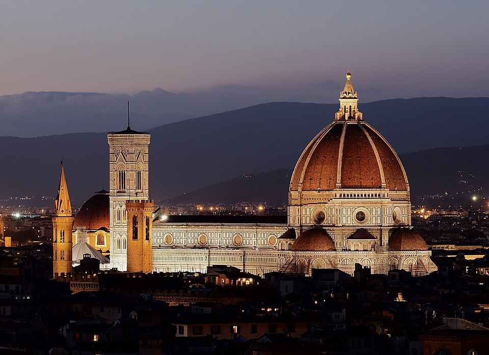
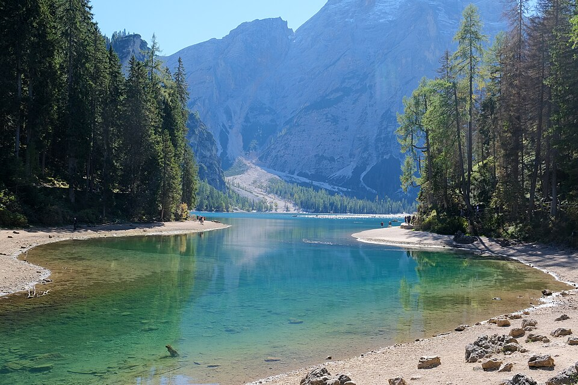
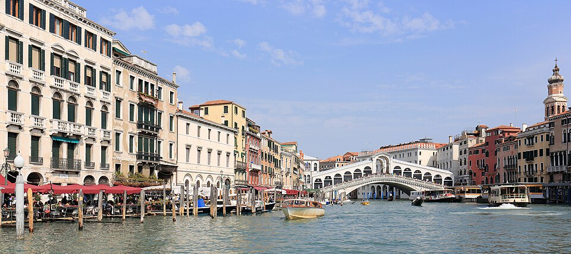
多洛米提補滿:Seceda 稜線、Alpe di Siusi 草原、Lago di Braies 翡翠湖,纜車+遊船+緩坡可達。
羅馬(梵蒂岡、競技場)+佛羅倫斯(烏菲茲、大衛像)+威尼斯,人文密度全歐頂級。
9 月下旬乾爽但非保證晴;威尼斯全年最濕、山區月底偶冷鋒。
城市平路、山段纜車+環湖草原緩行,硬走(三峰環線)列為進階可選。
永恆之城:古羅馬與梵蒂岡
- 入住歷史中心,傍晚特雷維噴泉、納沃納廣場
- 梵蒂岡博物館+西斯汀禮拜堂+聖彼得大教堂(早場票)
- 競技場+議事廣場+帕拉提諾丘;波各賽美術館或 Trastevere 老城
文藝復興心臟 + 托斯卡尼鄉間
- 學院美術館大衛像、米開朗基羅廣場看日落
- 烏菲茲美術館、聖母百花大教堂、舊橋
- 托斯卡尼一日:Chianti 酒莊或 Siena+San Gimignano
高山湖泊與草原:自然高潮(涼爽不曬)
- 入住 Ortisei(住宿附免費 Guest Pass,區內巴士/纜車免費)
- Seceda 纜車直上 2,519m 稜線短環線賞鋸齒峰
- Alpe di Siusi 歐洲最大高山草原緩行
- Lago di Braies 翡翠湖環湖步道+木舟
水都收尾:運河、聖馬可與離島
- 聖馬可廣場、嘆息橋、運河貢多拉
- Burano 彩色島+Murano 玻璃島;聖馬可大教堂+總督宮
返程
- 威尼斯機場搭機(多一轉),抵台
✨ 亮點
優點
- 人文藝術+高山湖泊一趟吃滿,完全命中核心偏好
- 9 月下旬涼爽乾爽,多洛米提是天然冷氣
- 全程纜車/遊船+平緩步道,不會走成行軍
- 城際高鐵串連,多洛米提無車也能玩
- 每地 3–4 晚深度節奏,不趕點
要注意
- 非保證晴朗:威尼斯最濕、山區冷鋒,須備彈性天與防水
- 梵蒂岡/烏菲茲/山區住宿須提前 1–2 個月訂
- 城市段旺季人潮密集,需早場避峰
- 多點移動、進出不同機場,行李須輕量化
📋 簽證 · 交通 · 預訂重點
希臘
古典文明搖籃 + 懸空修道院 + 火山地景 ── 人文藝術、山林岩柱與愛琴海日落一次擁有
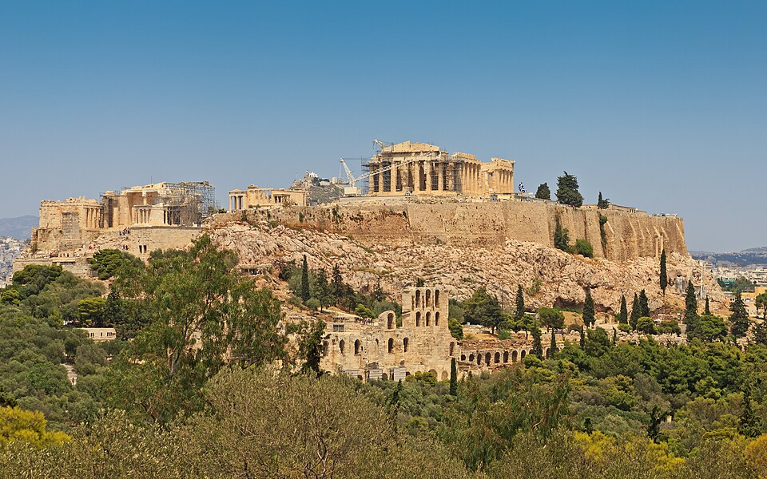
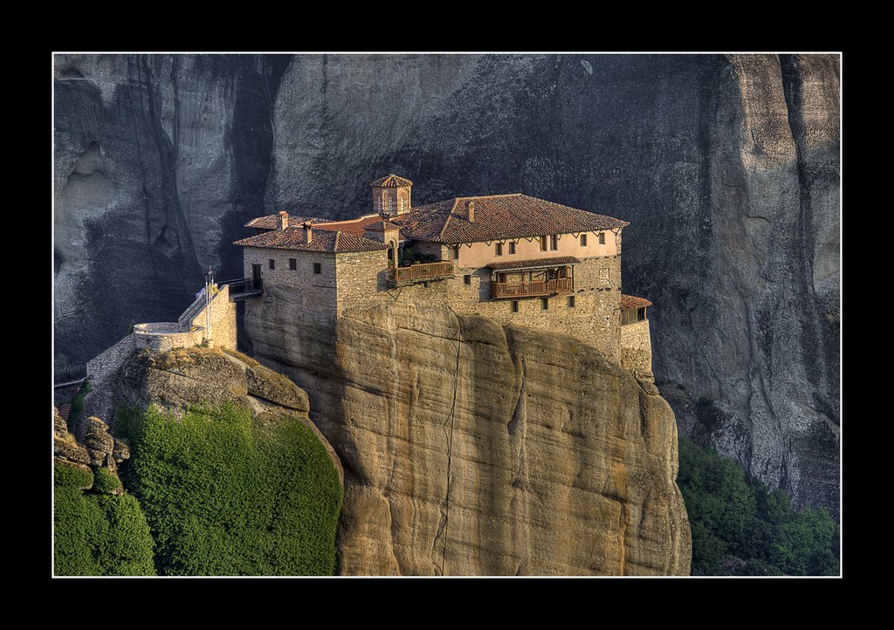
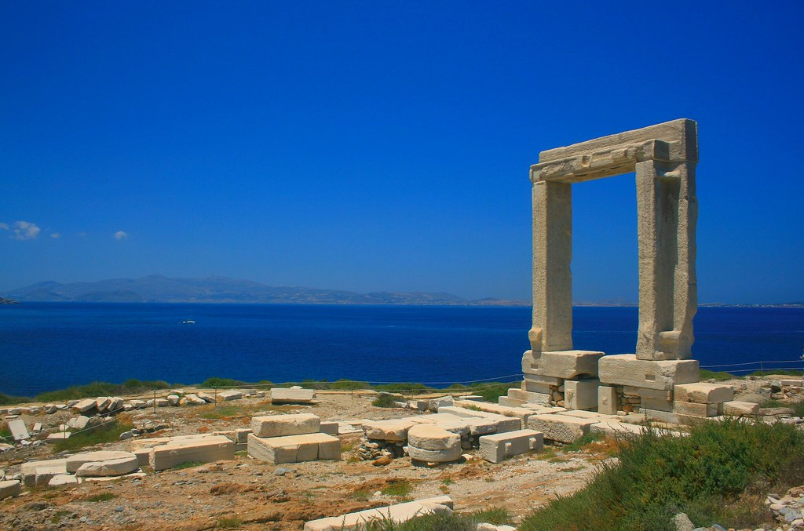
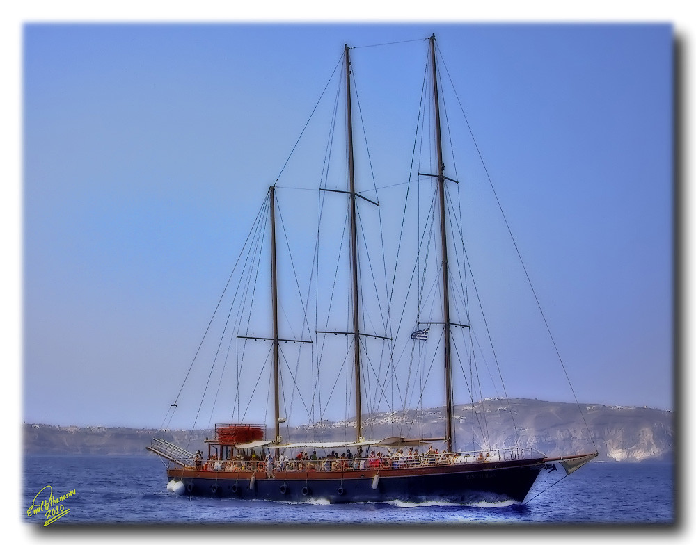
梅特歐拉砂岩柱+納克索斯山村橄欖梯田補足山林感;聖托里尼破火山口為地質奇景,但乾燥少綠、無湖泊。
衛城、考古博物館、拜占庭懸空修道院、納克索斯威尼斯城堡,濃度極高。
9 月上旬降雨近乎零、晴天穩定度最高(此項冠軍);唯正午仍曬。
纜車/遊船/短步道為主;梅特歐拉石階與聖托里尼海崖步道為進階可選。
古典雅典:衛城與博物館
- 清晨上衛城(帕德嫩神廟)避正午高溫
- 衛城博物館、國家考古博物館(正午躲冷氣)
- Plaka 老城、Lycabettus 看日落
懸空修道院:山林與信仰的人文奇景
- 火車北上卡蘭巴卡(約 4.5–5 小時),小鎮看岩柱夕陽
- 導覽參觀大梅特歐拉、瓦爾拉姆等懸空修道院
- Psaropetra 觀景台拍岩柱全景
轉進愛琴海
- 火車返雅典,搭渡輪/隔日早班前往納克索斯
綠意島嶼:山村、大理石與短步道
- 老城威尼斯城堡 Kastro、地標「阿波羅之門」看日落
- 內陸山村 Halki、Apiranthos 大理石村、橄欖梯田
- Plaka/Agios Prokopios 海灘戲水納涼
破火山口、日落與蜜月儀式
- Oia 藍頂教堂與全球聞名日落
- 遊船遊破火山口、溫泉海域
- Akrotiri 史前遺址(愛琴海的龐貝)補人文
返程
- 國內線返雅典(約 45 分),補購伴手禮後返台
✨ 亮點
優點
- 天氣穩定度極高,不必像中歐/英倫那樣賭天氣
- 人文藝術含量頂級,深度探索者很充實
- 梅特歐拉+納克索斯補足山林短板
- 避暑安排到位:博物館排正午、戶外排晨昏
- 9 月淡季價格回落 30–50%
要注意
- 自然弱項「乾燥少綠」,幾無翠綠湖泊
- 9 月初仍偏熱,正午 28–31°C 戶外時段受限
- Meltemi 起風時高速船顛簸偶停航,跳島留緩衝
- 聖托里尼相對擁擠、物價高,Oia 日落需卡位
- 多段交通,移動日較多
📋 簽證 · 交通 · 預訂重點
土耳其
奇岩熱氣球的晨光、兩洲交會的千年人文 ── 自然與藝術並重的涼爽蜜月(高 CP)
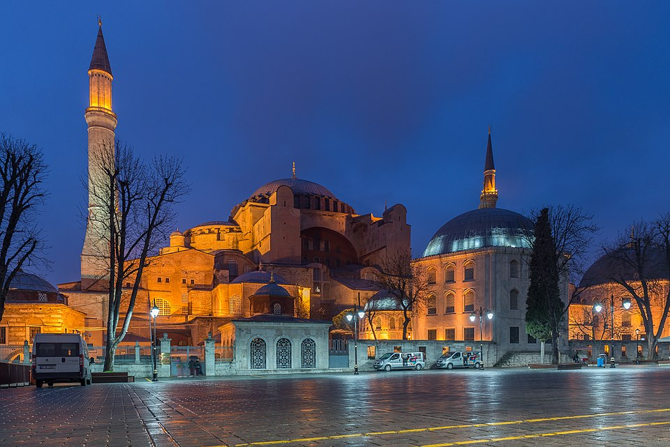
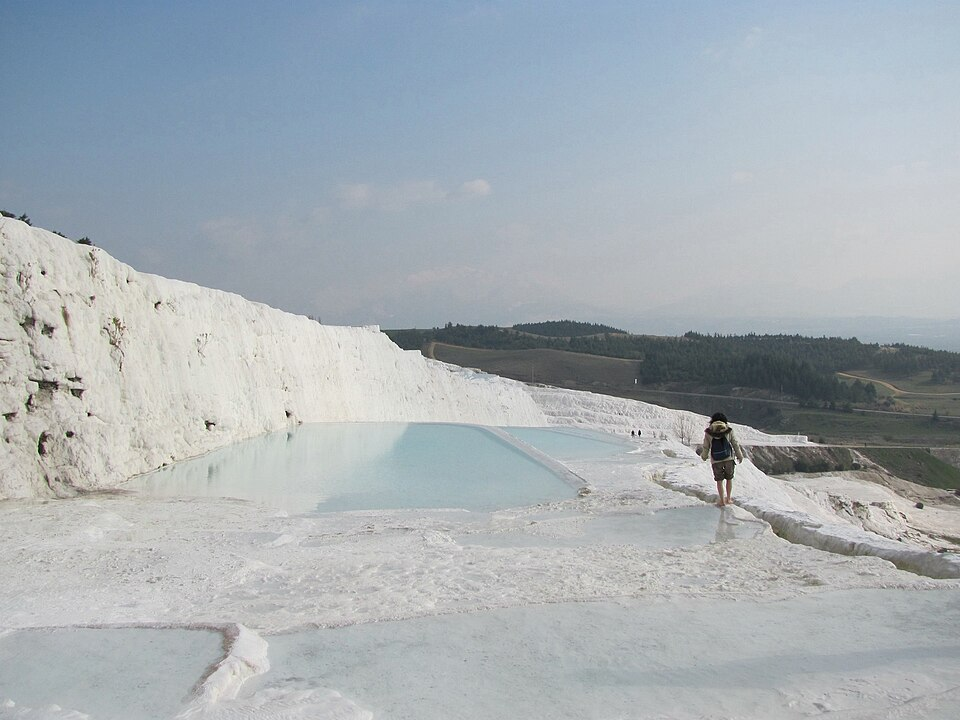
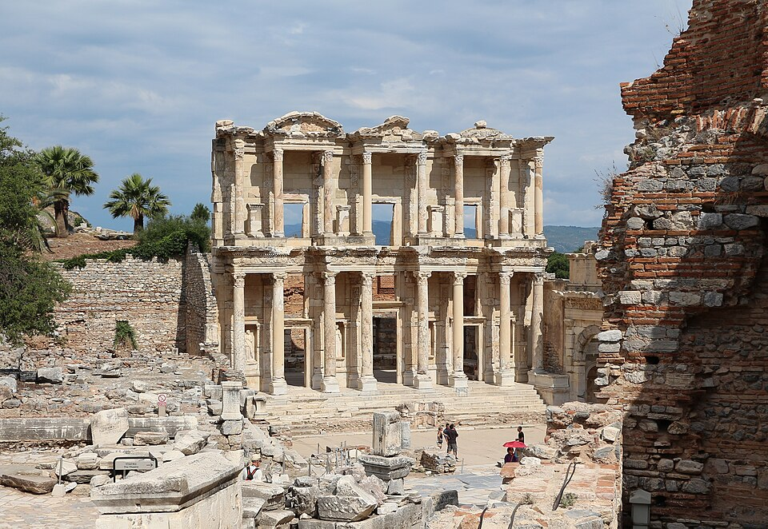
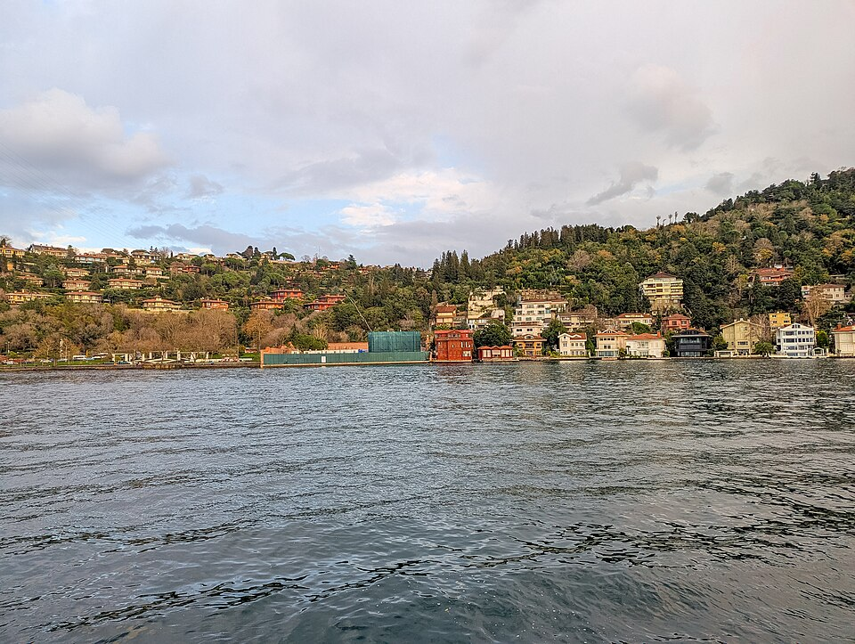
卡帕多奇亞奇岩谷地、熱氣球俯瞰、棉堡白色梯田,地景奇景密度高(無湖泊綠林)。
伊斯坦堡(聖索菲亞、藍色清真寺、皇宮)與以弗所古城,兩洲千年厚度十足。
5 月中下旬最乾爽;但熱氣球 85–95% 出飛、春季偶午後陣雨、棉堡陰天打折。
舊城步行集中、紅線觀景台短步道、梯田赤腳緩走;峽谷與地下城窄梯為進階可選。
千年人文・兩洲交會
- 聖索菲亞、藍色清真寺、地下水宮殿
- 托普卡匹皇宮與後宮、考古博物館
- 大巴扎與香料市集;博斯普魯斯黃昏遊船(海風涼爽)
破曉熱氣球・紅線奇岩
- 清晨熱氣球俯瞰仙人煙囪谷地日出(約 1 小時)
- 紅線:格雷梅露天博物館岩洞教堂、帕夏貝仙人煙囪
- 綠線:地下城、烏奇沙城堡、玫瑰谷日落
古典文明・以弗所古城
- 以弗所古城(賽爾瑟斯圖書館、大劇場、大理石街道)
- 聖母瑪利亞之家、錫林傑山村酒鄉
白色梯田・溫泉古城
- 石灰華白色梯田赤腳緩走(傍晚人少光柔)
- 希拉波利斯古城、克麗奧佩脫拉古溫泉池
歸途
- 土航多經伊斯坦堡轉機直飛桃園(約 12 小時)
✨ 亮點
優點
- 自然奇景與千年人文兼具,充實深度
- 5 月中下旬涼爽乾爽,熱氣球/遊船在晨昏
- 纜車觀景台、遊船、短步道為主,硬走可選
- 高 CP 值,花費明顯低於西歐
- 台北有直飛伊斯坦堡(土航),轉場少
要注意
- 熱氣球非保證出飛(85–95%),需備飛日
- 春季偶午後陣雨、棉堡陰天打折
- 幅員大,2 段國內線+數段拉車,轉場較多
- 以弗所/棉堡遮蔭少,須嚴守清晨入場
- 旺季熱門景點排隊長,須線上購票
📋 簽證 · 交通 · 預訂重點
瑞士 + 義北
兩座傳奇雪峰、一面義式湖光 ── 以纜車齒軌與遊船串起涼爽、充實的山湖蜜月
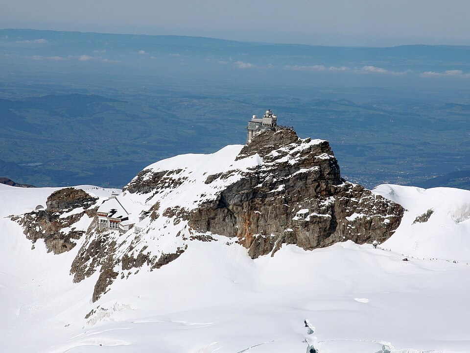
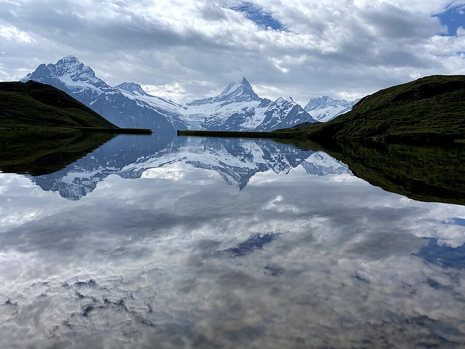
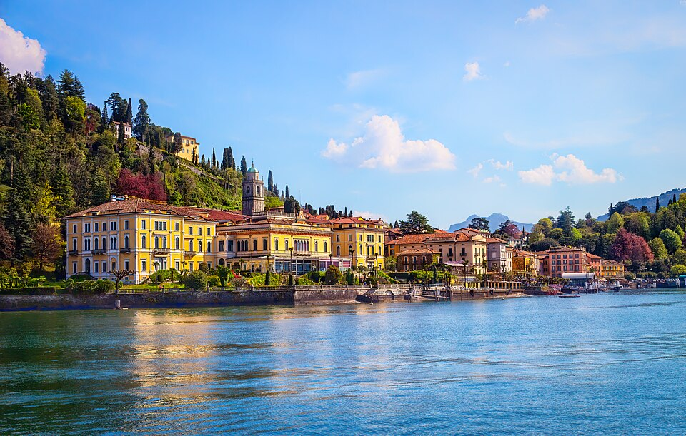
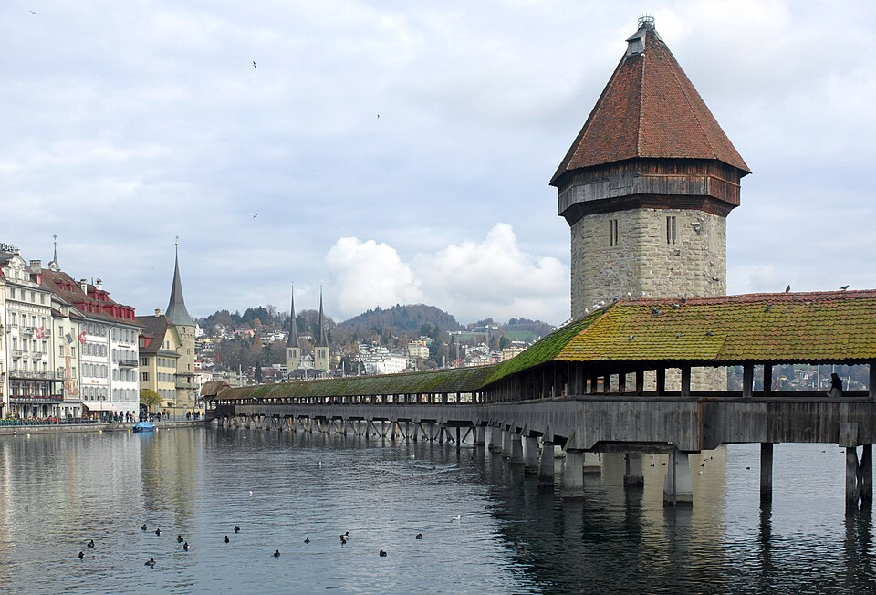
少女峰、馬特洪峰兩大雪峰加科莫湖,山林湖泊一次滿足,自然體驗五國天花板。
琉森老城、米蘭主教座堂與《最後的晚餐》補足,湖區小鎮兼義式風情(人文較單薄)。
9 月初較清澈,但高海拔觀景台午後常起雲鎖霧,「看不看得到峰頂」要碰運氣。
纜車、齒軌、遊船與短步道為主;鏡湖健行為進階可選。
抵達落地、湖城暖身
- 取 Swiss Travel Pass,轉往琉森:卡貝爾廊橋、獅子紀念碑
- 遊船遊琉森湖;可選皮拉圖斯山齒軌+纜車
雪峰與花草高原
- Eiger Express 纜車轉登少女峰「歐洲屋脊」Jungfraujoch
- First 纜車賞艾格北壁,走平緩 Bachalpsee 湖步道
- 勞特布魯能瀑布山谷、雪朗峰 360 度展望
冰川快車穿越阿爾卑斯
- 冰川快車全景車窗前往策馬特,沿途萊茵峽谷、高山隘口
馬特洪峰多角度展望
- 戈爾內格拉特齒軌列車賞馬特洪峰正面與冰河全景
- 馬特洪冰川天堂(歐洲最高纜車站 3,883m)
- Stellisee 鏡湖映馬特洪(適度散步)
跨入義北、湖畔義式慢遊
- 渡輪串遊瓦倫納—貝拉吉歐—梅納焦「湖區三角」
- 貝拉吉歐山城巷弄、別墅花園
人文藝術收尾
- 達文西《最後的晚餐》、米蘭主教座堂登頂、艾曼紐迴廊
✨ 亮點
優點
- 涼爽不曝曬,9 月初白天約 12–16°C 體感舒適
- 雙雪峰+科莫湖,自然體驗五國天花板
- 幾乎全程纜車/齒軌/遊船,徒步壓力低
- 瑞義同屬申根,一趟一次入境;STP 一票打通
- 基地式連住,賭多次晴窗降低遺憾
要注意
- 高海拔觀景台午後常鎖雲,看不到峰頂的風險高
- 策馬特濕度高、低地降雨日約三到四成,需彈性日
- 物價最高:住宿/登山鐵道補票/餐飲都貴
- 名額緊張:最後的晚餐、冰川快車須早訂
- 無直飛,來回含轉機 30 小時以上
📋 簽證 · 交通 · 預訂重點
挪威
峽灣、午夜太陽與北歐藝術 ── 為怕熱靈魂打造的涼爽深度蜜月
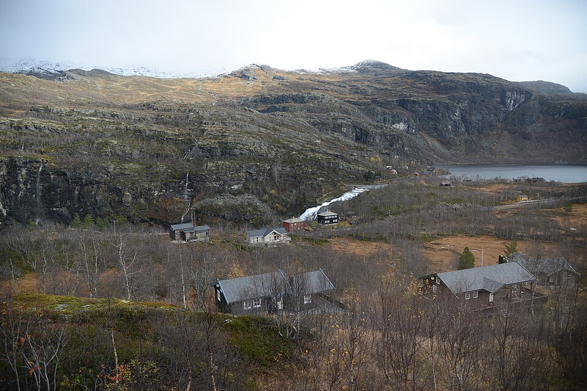
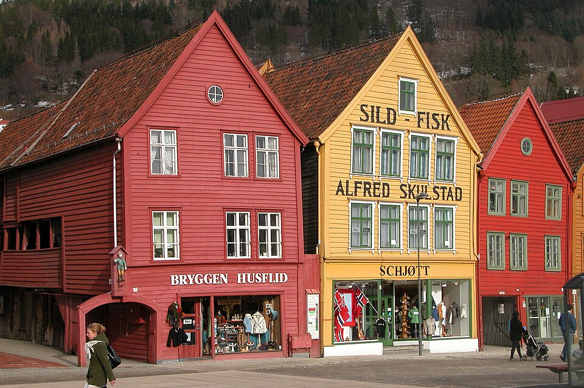
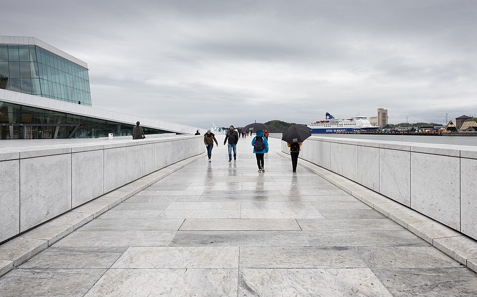
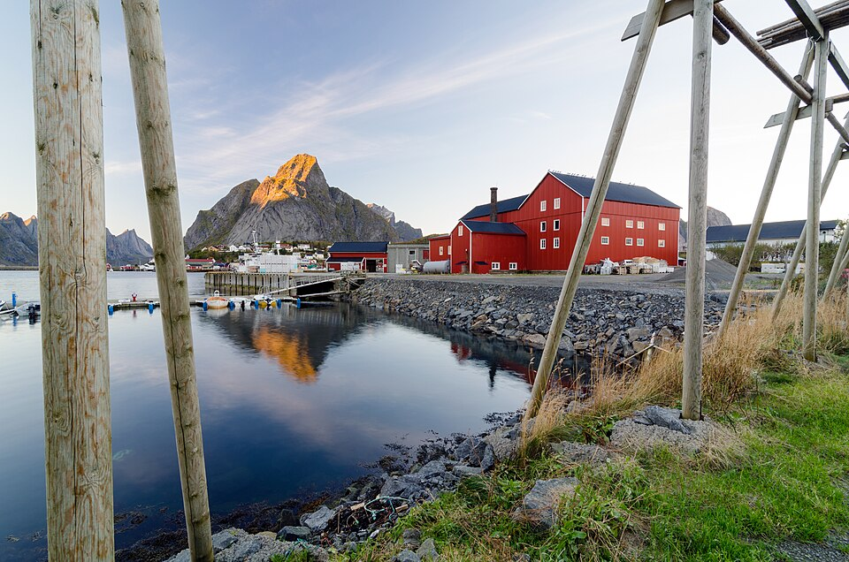
松恩/納柔依/蓋朗厄爾三大峽灣、瀑布、雪峰,搭遊船與齒軌火車就能飽覽。
孟克《吶喊》、維格蘭雕塑公園、卑爾根布呂根世遺、葛利格故居,藝術與自然並重。
西岸全年多雨(卑爾根年降 2,500mm),6 月相對較乾但仍可能遇雨、崖頂鎖霧。
景觀火車、齒軌、遊船、纜車與短步道為主;Lofoten 陡升步道為進階可選。
北歐藝術與峽灣首都
- 孟克美術館看《吶喊》、國家博物館
- 維格蘭雕塑公園(免費,逾 200 件雕塑)
- 歌劇院屋頂步道、Aker Brygge 海濱
挪威縮影:景觀火車+齒軌火車
- 卑爾根線景觀火車穿越哈丹格高原至米達爾
- 轉乘弗洛姆高山齒軌火車(Flåmsbana)下行,沿途瀑布峽谷
納柔依峽灣世遺遊船
- 電動遊船穿越最窄最戲劇的世遺峽灣段
- 可選 Stegastein 觀景台眺望松恩峽灣
七山之城:世遺木屋與作曲家故鄉
- 布呂根漢薩同盟世遺彩色木屋區與魚市場
- Fløibanen 纜車登 Fløyen 山,山頂短步道與市景
- 葛利格故居午間音樂會、KODE 藝術博物館群
皇冠級峽灣與新藝術之城
- 新藝術風格海港城 Ålesund,登 Aksla 山觀景
- 世遺景觀渡輪飽覽七姊妹瀑布
- Dalsnibba 觀景台(1,500m)俯瞰峽灣全景
午夜太陽下的北極峽灣群島
- Reine、Hamnøy 紅色漁村與尖峰倒影(經典明信片)
- 6 月午夜太陽:午夜仍可在海灘看不落的太陽
- (可改在卑爾根/奧斯陸多留並加峽灣緩衝日)
✨ 亮點
優點
- 涼爽夏季+午夜太陽,完全避開酷暑與正午曝曬
- 三大峽灣+北歐藝術真正並重
- 全程景觀火車/齒軌/遊船/纜車,適度散步即可
- 白晝長,單日可塞更多體驗,深度充實
- 簽證簡單:免申根簽,僅需 ETIAS
要注意
- 西岸全年多雨,與「要晴朗」訴求衝突最大
- 物價極高(全球前段班),餐食住宿燒錢
- Lofoten 無直飛,需轉機,時間長
- 旺季景觀火車與遊船易售罄,須提前 4–8 週訂